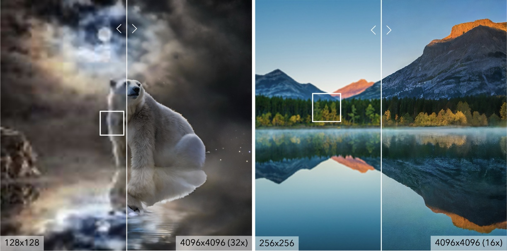
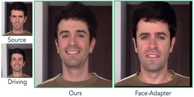

2026

MagnifiQ: Patch-aware Text Guided Progressive Upscaling for High-Resolution Image Restoration
ECCV Workshop on Low-Level Vision Frontiers (LoViF)
Researcher · Qualcomm AI Research
I work on 3D computer vision and generative AI at Qualcomm AI Research. Previously MSc from SFU (with Yağız Aksoy), MSc from U. Manitoba (with Yang Wang), BE from VTU, India.

MagnifiQ: Patch-aware Text Guided Progressive Upscaling for High-Resolution Image Restoration
ECCV Workshop on Low-Level Vision Frontiers (LoViF)

PicturePerfect: Diffusion-based Same-identity Facial Replacement
ECCV Workshop on Foundation and Generative Models in Biometrics (FoundGen-Bio)

HexaGen3D: StableDiffusion is just one step away from Fast and Diverse Text-to-3D Generation
WACV

Scale-Invariant Monocular Depth Estimation via SSI Depth

EdgeRelight360: Text-Conditioned 360-Degree HDR Image Generation for Real-Time On-Device Video Portrait Relighting
CVPR Workshop on Efficient and On-Device Generation (EDGE)

Datamoshing with Optical Flow
SIGGRAPH Asia Posters

Interactive Editing of Monocular Depth
SIGGRAPH Posters

AdaCrowd: Unlabeled Scene Adaptation for Crowd Counting
IEEE Transactions on Multimedia (TMM)

Sentence Guided Temporal Modulation for Dynamic Video Thumbnail Generation
BMVC

Adaptive Video Highlight Detection by Learning from User History
ECCV

Few-Shot Scene-Adaptive Anomaly Detection
ECCV (Spotlight)

Few-Shot Scene Adaptive Crowd Counting Using Meta-Learning
WACV

Domain Adaptation in Crowd Counting
CRV

One-Shot Scene-Specific Crowd Counting
BMVC

Future Frame Prediction Using Convolutional VRNN for Anomaly Detection
AVSS
Simon Fraser University
2022
Metric Monocular Reconstruction through Ordinal Depth
University of Manitoba
2020
Scene Adaptive Crowd Counting